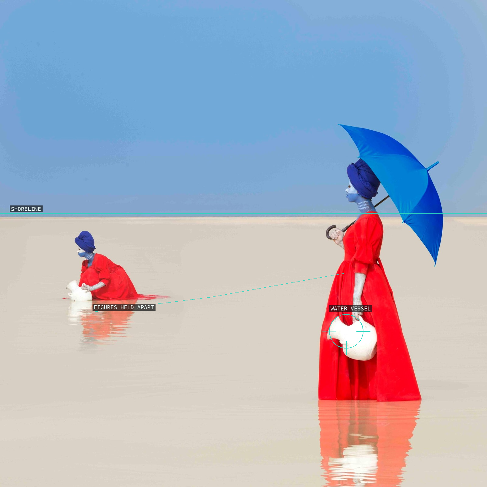
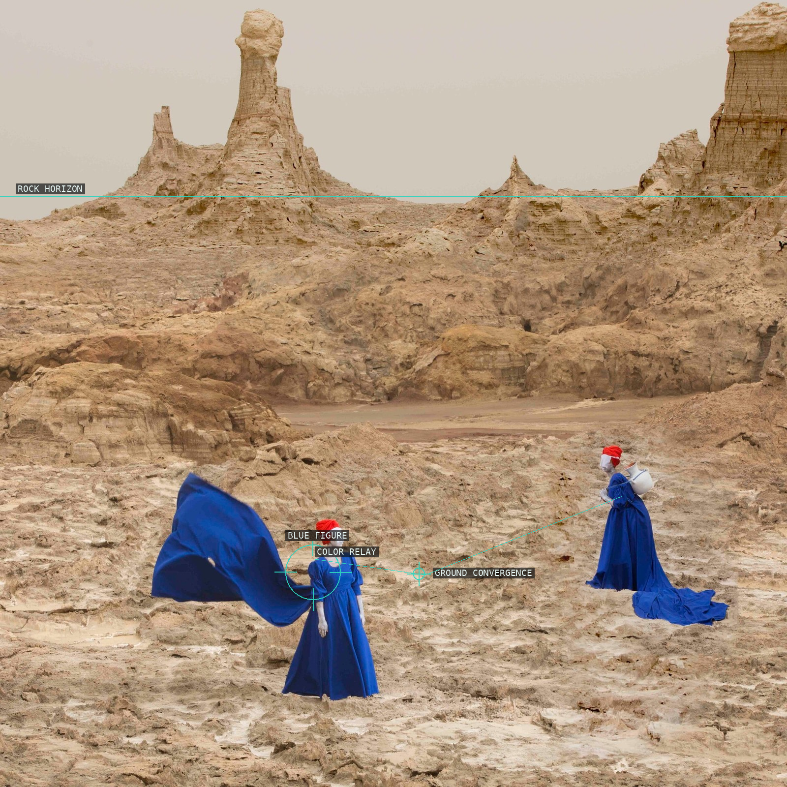
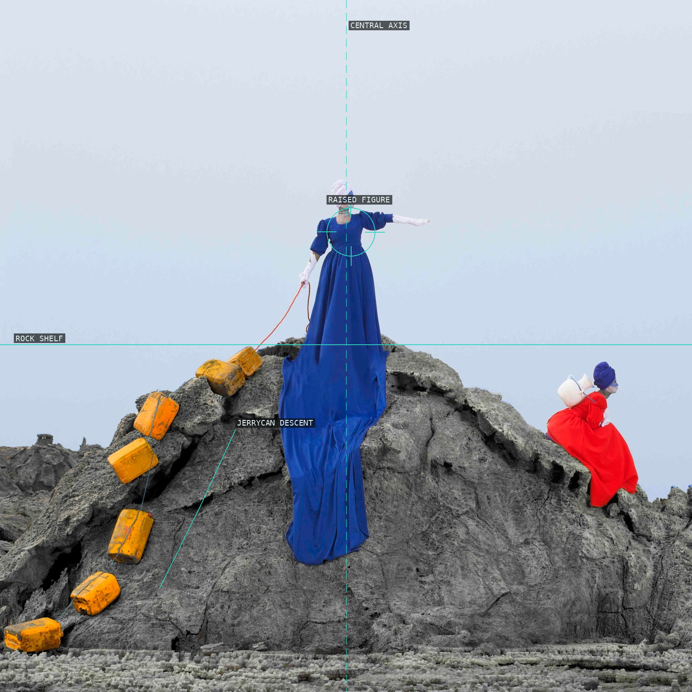
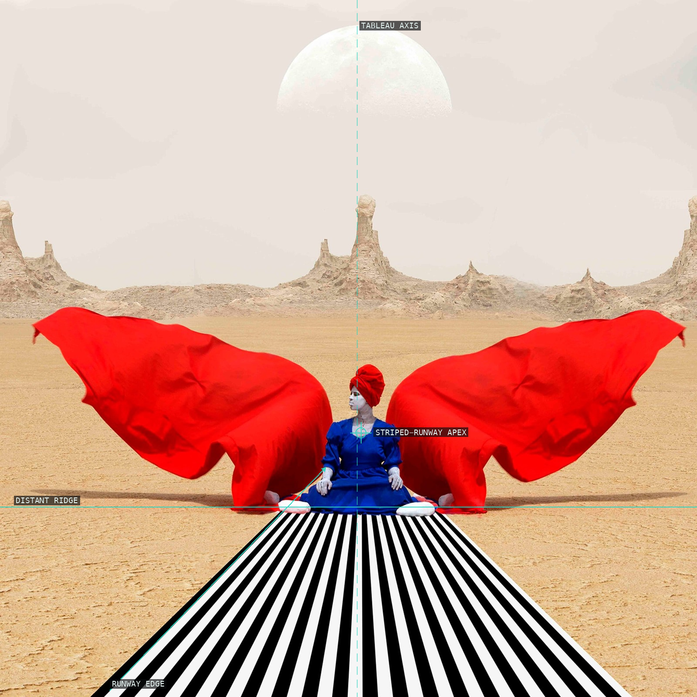
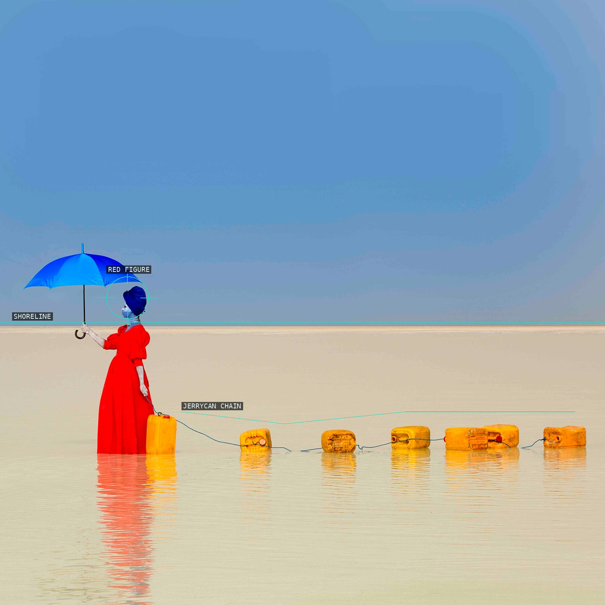
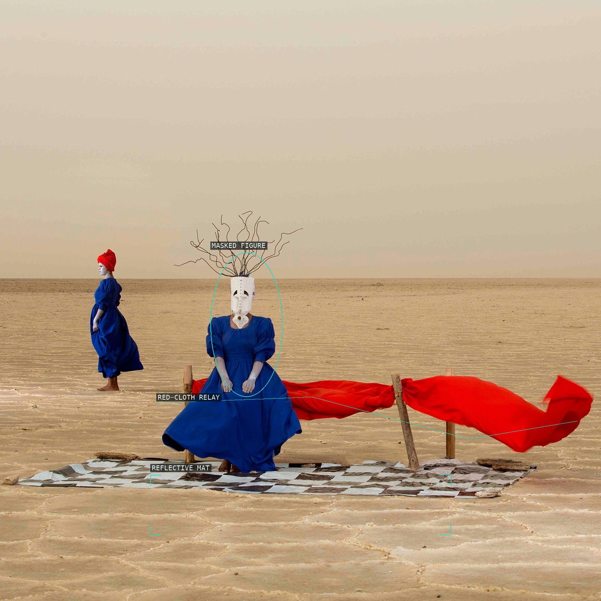
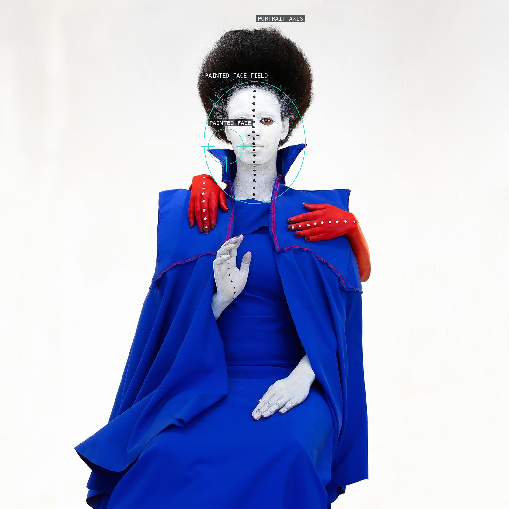
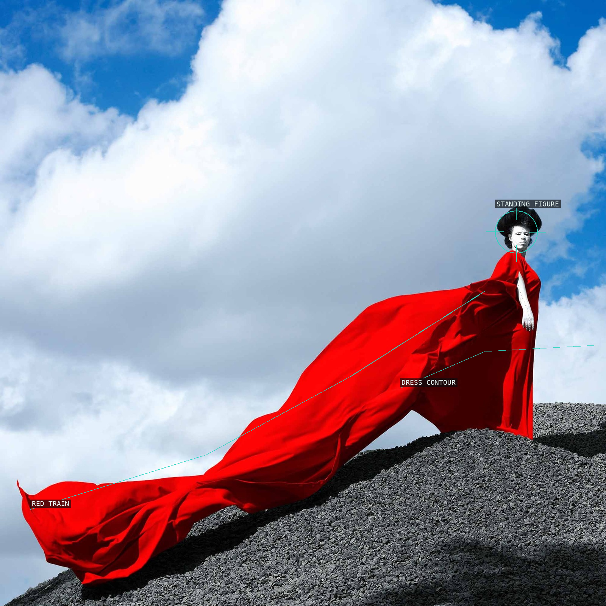
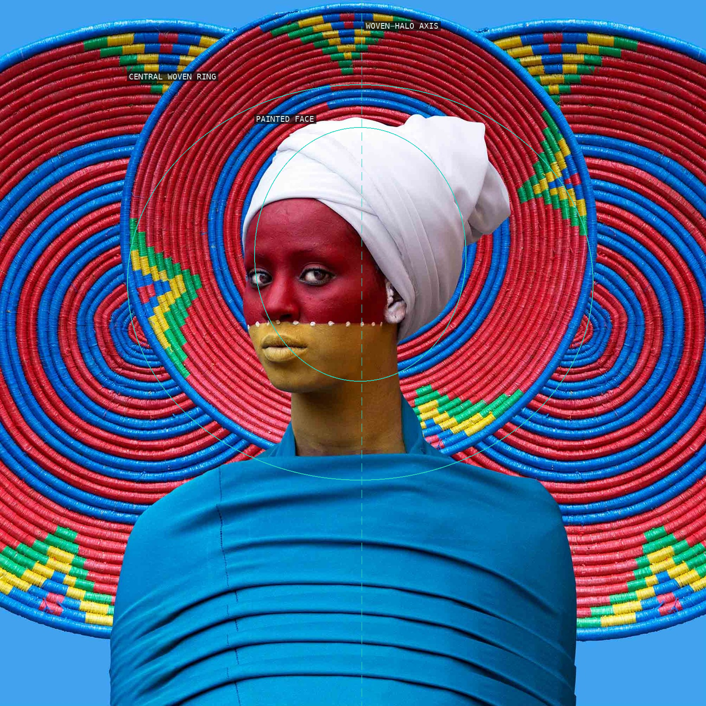
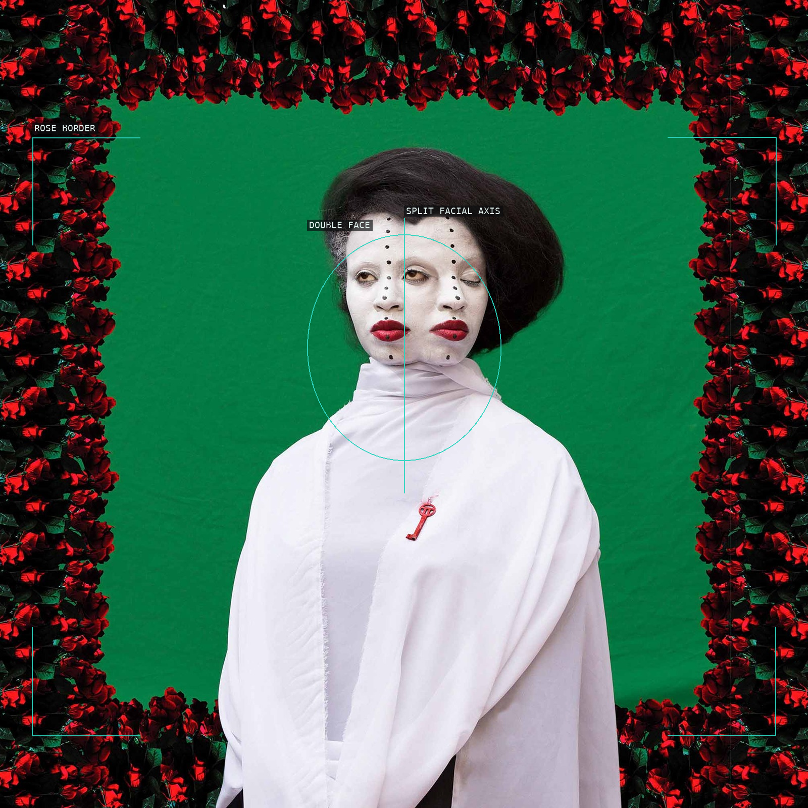

aida-muluneh - proofs
10 plates. Deterministic overlays rendered by the composition-analysis skill.

01-burden-of-the-day
A shoreline holds two red figures apart across a pale water field.

02-distant-echoes-of-dreams
Blue figures and red accents gather in the lower rocky field.

03-knowing-the-way-to-tomorrow
A central figure rises above a descent of yellow containers.

04-star-shine-moon-glow
A striped runway drives a near-symmetrical red tableau to an apex.

05-the-shackles-of-limitations
An umbrella figure and linked yellow jerrycans punctuate the shore.

06-the-sorrows-we-bear
A mask, red cloth, and reflective mat make a low stage.

07-all-in-one
A frontal painted face is held on a portrait axis.

08-dinknesh-part-three
A red train rises across dark ground to a standing figure.

09-city-life
A direct gaze is encircled by a concentric woven halo.

10-romance-is-dead
A doubled face meets a green field inside a rose border.